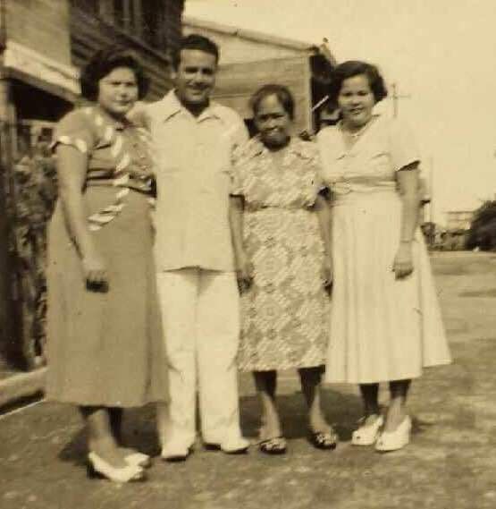
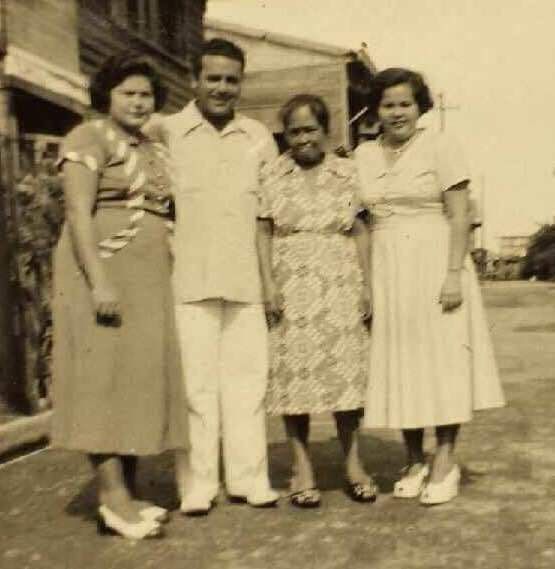

The "Story" goes that Cpt. Tolman was assigned with the 6th Cavalry of George Armstrong Custer -
yes the very same of Little Big Horn. It seems our Great-Great grandfather was sick with what was believed to
be small pox - so he was not able to ride off into the infamous battle, otherwise we would not be here. And the story
continues ...
 
